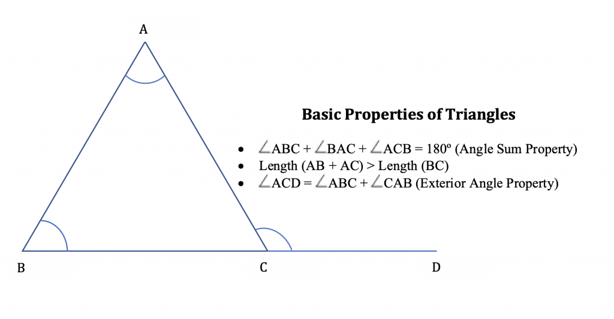

As the name suggests, the triangle is a polygon that has three angles. So, when does a closed figure has three angles? When it has three line segments joined end to end. Thus, we can say that a triangle is a polygon, which has three sides, three angles, three vertices and the sum of all three angles of any triangle equals 180°.
These are the properties of a triangle:
Triangles can be classified in 2 major ways:
Based on the angle measurement, there are three types of triangles:
Let us discuss each type in detail.
A triangle that has all three angles less than 90° is an acute angle triangle.
A triangle that has one angle that measures exactly 90° is a right-angle triangle.
A triangle that has one angle that measures more than 90° is an obtuse angle triangle.
Based on the length of the sides, triangles are classified into three types:
Let us discuss each type in detail.
A triangle that has all three sides of different lengths is a scalene triangle.
A triangle that has two sides of the same length and the third side of a different length is an isosceles triangle.
A triangle which has all the three sides of the same length is an equilateral triangle.